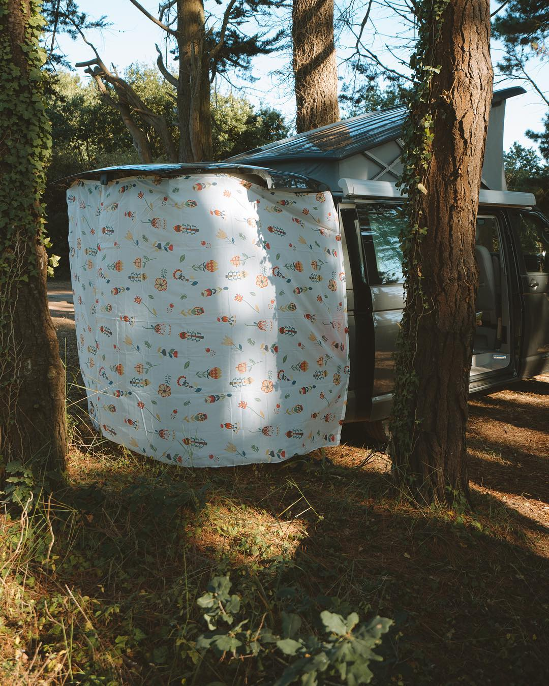

Voilà bientôt deux ans que nous roulons en famille à bord d’Yvon, notre VW T6 California. Jusqu’à présent, je n’ai pas vraiment parlé de Van Life sur ce blog et pourtant, je pense que j’ai 1000 idées de récits et conseils à documenter. Mais je crois que pour parler de ce sujet, j’avais le besoin de me sentir légitime et au bout de deux ans, je pense avoir le recul nécessaire pour parler librement de Van Life et commencer à partager quelques récits et conseils.
Pour introduire cette nouvelle rubrique, je commence par présenter une liste non exhaustive d’accessoires qui sont totalement devenus indispensables dans notre pratique du van et quelques autres qui améliorent notre confort de vie à bord d’Yvon.
Les indispensables
Commençons par le roi des accessoires, celui que tout vanlifer qui se respecte se doit de posseder, celui dont l’absence se fait vite sentir, j’ai nommé… La balayette ! Un van, ce n’est pas très grand, ça se salit vite, mais ça se nettoie vite également… Si on possède cette fameuse balayette. Le van étant autant un espace de vie qu’un moyen de transport, nous faisons attention à bien le garder propre, pour notre confort quotidien.
Quand on part un peu plus longtemps qu’un weekend, il nous arrive parfois d’emmener avec nous notre Dyson V8 sans son tube, juste avec une petite brosse pour aspirer les miettes que Coline, 3 ans et demi, a l’habitude de semer un peu partout pendant les repas. C’est luxueux, mais nous avons la place et même de quoi le recharger si besoin.
Dans le même genre, nous utilisons régulièrement une cordelette de style paracorde ou drisse (pour les voileux) qui nous permet de bricoler un fil à linge à l’extérieur, voir parfois même à l’intérieur du van. Pensez à laisser quelques pinces à linge par la même occasion dans le van, ça évite de devoir courrir après ses slips ou torchons !


La gestion de l’eau est très importante en Van. Dans notre California, nous avons une réserve de 30 litres que nous utilisons pour la cuisine, vaisselle et toilette, JAMAIS pour boire ! Nous utilisons donc des gourdes, la Klean Kanteen 800ml est parfaite pour notre quotidien, car elle loge parfaitement dans l’emplacement réfrigéré du cockpit du van. En réserve, nous utilisons deux jerricans de 10 litres chacuns, un pour l’eau potable et l’autre en réserve et pour le transfert d’eau entre un point d’eau et la réserve du van.
ProTip : Nous essayons de remplir régulièrement le jerrican de réserve pour faire des appoints réguliers plutôt que d’aller sur les aires de camping-cars où on paye généralement pour 100 litres d’eau d’un coup, beaucoup trop pour nos besoins en van.
Côté cuisine, nos ustensiles varient un peu en fonction des saisons et de nos besoins, mais on a toujours une bouilloire à disposition. Nous l’utilisons plusieurs fois par jour pour faire chauffer l’eau de la vaisselle ou de la toilette (eh oui, pas d’eau chaude à bord d’Yvon), ou tout simplement pour se faire une bonne tasse de café fumante. Dans notre tiroir de cuisine, nous avons toujours un bon couteau et un briquet si jamais le piezzo de la cuisine nous lâche ou pour n’importe quel autre besoin.
À bord, nous rangeons nos vêtements dans des Packing Cubes. On a à peu près tout essayé, à chaque fois le bordel s’invitait dans nos placard, mais depuis qu’on a optés pour cette solution, tout reste bien organisé, même après un freinage un peu brutal. De la même manière, nous utilisons des caisses en plastique dans le coffre et des boites dans les placard de la cuisine afin d’organiser tout cela et de s’y retrouver facilement.
En van, chaque chose a sa place et chaque place a sa chose !


Pour nos besoins les plus primaires (disons cela comme ça), nous avons une petite pelle pliante qui nous permet d’enterrer ces fameux besoins et de laisser l’endroit aussi propre, voir plus propre qu’avant notre passage. Nous avions déjà cette pelle avant le van, mais je pense qu’une petite pelle de jardinage fait l’affaire, les puristes pourront sinon utiliser les pelles faites pour ça. Pour ceux que ça interesse, une petite vidéo récap’ pour les bonnes pratiques :-)
Et pour éviter d’aller faire ça dans le noir, pensez à avoir une lampe frontale ! Chez nous, tout le monde a sa petite lampe, ça permet d’y voir plus clair au fond d’un placard comme d’aller se trouver un petit coin pipi tranquille dans le noir.
Enfin, pour en finir avec nos accessoires indispensables, nous avons toujours une paire de cales dans le coffre afin de dormir bien droit, même sur un spot défoncé et nous ne partons jamais sans une carte ou un GPS. Nous utilisons personnelement un mix de Google Maps et Waze en plus de Park4Night, super pratique avec CarPlay.
Ceux qui améliorent notre confort
Bon, maintenant que les indispensables sont présentés, voici quelques petits trucs en plus qui améliorent notre confort.
Le premier auquel on pense, c’est bien le sur-matelas. Je me demande si je n’aurai pas du le mettre dans les indispensables tellement le confort du lit du bas est mauvais dans un Calif ! Avec un sur-matelas et/ou matelas folder, c’est un défaut vite gommé. Etant donné le prix prohibitif du matelas VW, nous avons trouvé notre sur-matelas et le matelas MP3 chez Marcododo, un vanlifer qui produit ses propres matelas ! Le top du top pour un prix très raisonnable (housse et drap housse inclus)!

Yvon est équipé d’une petite douche directement dans le coffre, nous avons donc profité du hayon pour fabriquer un rideau de douche aimanté sur-mesure, nous offrant ainsi un peu d’intimité pendant notre toilette. Coût de l’opération ? 10€ d’aimants et deux rideaux de douche à 7€ que l’on a cousu ensembles pour cette cabine sur-mesure. Vu que c’est toujours de l’eau froide, on a également une douche solaire si le fond de l’air est frais pour une douche froide.
Nous nous sommes également offert un petit BBQ de camping au gaz qui nous permet de griller ce que l’on veut ou de l’utiliser comme cuisine d’extérieur si besoin. La vie en van se passe bien souvent dehors et si on peut cuisiner dehors, alors tant mieux, on peut également profiter de notre hamac pendant que ça cuit :-)
Enfin, nous avons mis un petit tapis au sol de la cellule pour faciliter le nettoyage et rendre le sol un peu moins froid. Le prochain achat sera très probablement un porte-vélo, sans doute un Thule à fixer sur l’attelage et nous permettre ainsi de voyager avec nos vélos ou une malle d’extérieur.